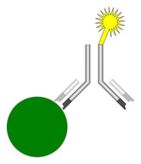

It has been long understood that activated, virus-specific CD4 and CD8 T cells are required for the clearance of Influenza A virus (IAV) infections, and that the proliferation of these effectors is the work of the dendritic cell (DC), the main antigen presenting cell of the immune system. First described by Steinman, DCs have the unique ability to induce primary immune responses and thus play a vital role in the orchestration of the immune response against many viruses, including IAV. Due to this importance, much research has been devoted to elucidating the role of DCs during influenza infection.
DCs represent a heterogeneous population of cells, with distinct subsets residing in the blood, secondary lymphoid tissues, and peripheral organs. Of particular interest during IAV infection are the pulmonary DC subsets, of which there are several. The two major subsets are the CD11c+ MHC II+ CD11b- CD103+ CD4- CD8- airway and alveolar DCs (CD103+ DCs) and CD11c+ MHC II+ CD11b+ CD103- CD4- CD8- interstitial DCs (CD11b+ DCs), though other subsets are present. Recent studies have shown that these subsets both respond to IAV infection by migrating to the mediastinal lymph nodes, but that only the CD103+ DC subset is able to present viral antigen to naïve CD8+ T cells. This does not seem to hold true in every case, however, with some reports suggesting that the CD11b+ DCs are the main antigen presenting population in the lymph nodes, inducing proliferation in both CD4 and CD8 T cells. (From "The Potential Role of Pulmonary Dendritic Cell Subsets During Influenza A Virus Infection" by Vaughan James.)

This artistic rendering, taken from the National Institute of Helth, shows the surface of a human dendritic cell.
Chlamydia infections present major issues around the world, accounting for about 4% of blindness worldwide. The problem is greatly exacerbated in resource-limited countries, where scarcity of medical equipment and trained staff makes accurate diagnosis difficult at best, leading to unnecessary morbidity. To combat this, Dr. Jeffery Grimes at the CFR studied Lateral Flow assays (LFA) in the context of chlamydia infection in order to find a cheap, simple, sensitive diagnostic test that could be used in developing nations.
The technology for LFAs has been used for a long period of time, most commonly seen in home pregnancy tests. A basic immunoassay, the LFA uses a sample to trap a liquid sample and uses capillary action to draw it up a conjugate pad and a test strip where antigen-specific (in this case, Chlamydia) antibodies have been immobilized. As the sample passes over the conjugate pad, a reporter complex will bind to the target antigen, if present. The sample continues up the testing strip to the immobilized specific antibodies, which will trap and concentrate any target antigen in place, creating the familiar double line seen on home pregnancy tests.
The Grimes lab tested the use of a fluorescent reporter complex, rather than the traditional colormetric reporter used in common home tests, in order to increase the LFA’s sensitivity to the presence of Chlamydia. Preliminary results suggest that using a fluorescent reporter reduced the limit of detection of Chlamydial antigen by 1 to 2.5 logs. (From Grimes, Jeffrey M., "Enhancement of Lateral Flow Assay for the Detection of Whole Viral Particle and Chlamydial Elementary Bodies" (). Masters Theses 1896 - February 2014. Paper 1182. Used by permission of the author.)

A schematic showing the basic components of an immunoassay. The substance in question (antigen; green) is bound on to a surface. Antibodies specific to the antigen (grey) are added. If the antigen is present in the sample, the antibody will bind as shown. A fluorescent reporter molecule specific for the antibody (yellow) is then added, causing the sample to ‘light up’ if the antigen-antibody complex is present.
Though we may have removed most evolutionary pressure from our species thanks to technological and scientific advancements, evolution is still shaping the world around us, according to a recent study from Evolutionary Biologists Drs. Amalah Morrison and Yin-yin Wang.
Discovered recently in American Suburbia, the newly dubbed “Laser-Cat” appears at first to be a normal domesticated feline, but CFR researchers have discovered that it possesses the unique ability to shoot lasers for its eyes when photographed.
The purpose for this adaptation is currently unknown, though extensive genetic tests indicate that the mutation may be present in upwards of 70% of domesticated cats.

A Laser-Cat in the wild.
In one of the most profound studies produced by the CFR, social scientist Dr. Nephry Urrutia discovered recently that is it possible for individuals to tell un-truths, and to at times fabricate situations, entities and meanings entirely.
Conducting thousands of focus-groups, interviews and surveys, Dr. Urrutia determined that 99% of respondents (p-value ≤ 0.001) had at some point in their lives told a lie.
From the discussion section of her latest paper, “I Don’t Know What to Believe Any Longer: The Propensity for the Individual to Fabricate Reality” - “These results indicate a troubling trend in the general population. While most assume that the things they are being told are entirely factual, empirical data suggests quite the opposite. The individual is prone to lying, and there appears to be no topic that is free from suspicion.
"This has far-reaching implications. What can we know about reality, if it is so filled with lies? More research is necessary to discover the true depth of these untruths, but we must be prepared to accept that everything that we know may be fabricated. Yourself, those around you, your circumstance – all may be much less grounded in reality than one might think. It is even possible for a venerable institution such as the CFR to be entirely fictional, though this, of course, would represent a devastating loss to humanity as a whole."

Sometimes, it is possible for people to tell lies.